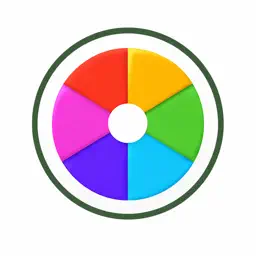
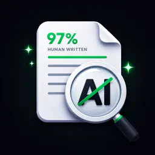
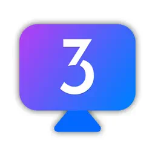

Audio Edit: Audio Editor Pro
iPhone · iPad · Mac
Record, trim, clean up and transform audio files with multi-track editing, 60 studio effects and tools, noise reduction, and export to 28 formats.
Independent Apple-platform studio
AppLayer Studio builds iPhone, iPad and Mac apps for editing audio, scanning documents, recording video, making art and staying productive, along with practical guides on getting more out of your devices.
Featured
iPhone · iPad · Mac
Record, trim, clean up and transform audio files with multi-track editing, 60 studio effects and tools, noise reduction, and export to 28 formats.
iPhone · iPad
Trim a favorite moment from a video or audio file and save it as a ringtone, alarm sound, text tone or charging sound.
Scan documents with automatic edge detection, turn photos into PDFs, extract text with OCR, add signatures, and keep everything organized in folders.
Record with the front and back cameras at once and save synchronized 9:16 and 16:9 videos from a single take, with FaceCam picture-in-picture and a teleprompter.
iPhone · iPad
Screen recording in up to 4K at 60 fps with no watermark or time limit, plus a multi-track video editor and creator tools such as face-cam commentary.
iPhone · iPad
A relaxing coloring book with 1,700+ pages in 36 categories, tap-to-fill that stays inside the lines, 20+ realistic brushes and color inspiration.
App directory
Search by name or by what you want to do, then filter by category or platform.
Audio & Music
A full audio studio for iPhone, iPad and Mac.
Audio & Music
Turn any video or audio clip into a custom tone.
Audio & Music
Convert videos on your device to MP3, offline.
Audio & Music
Louder volume, deeper bass and a 5-band EQ.
Audio & Music · Device Utilities
Cleaning tones plus a compact audio test toolkit.
Productivity & Business · Audio & Music
Record and transcribe on-device, in real time.
PDF & Documents
Scan, OCR, sign and organize documents.
PDF & Documents
Convert, merge, split, compress and sign PDFs.
Productivity & Business · PDF & Documents
Professional invoices and estimates from your iPhone.
Productivity & Business · Lifestyle & Habits
Log spending in a tap and stay on budget.
Camera & Video
One take, two videos: vertical and horizontal.
Camera & Video
Record your screen, then edit it in one app.

Photo, Art & Design
Turn photos into aesthetic, shareable cards.
Photo, Art & Design · Camera & Video
Trace any sketch onto real paper with your camera.
Photo, Art & Design
Tap to fill, or paint with realistic brushes.
Productivity & Business · Writing & AI
A keyboard with snippets, OCR and built-in tools.

Writing & AI
Rewrite, check, chat and translate in one app.
Productivity & Business · Lifestyle & Habits
Start a focus session with a single tap.
Productivity & Business
Write and preview HTML, CSS and JS on iPhone and iPad.
Device Utilities
Scan, create and style QR codes and barcodes.
Device Utilities
Find duplicate photos, large videos and messy contacts.

Device Utilities
Plain-English tutorials for iOS device management.
Lifestyle & Habits
Prayer times, a real Fajr alarm and Qibla, offline.
No apps match those filters.
Try a broader word like “audio”, “PDF” or “video”, or clear the filters.
Categories
Edit, convert, boost and test audio.
6 apps
Scan, convert, sign and send documents.
3 apps
Record, react and repurpose video.
3 apps
Color, draw and style your photos.
3 apps
Focus, invoice, track and build.
6 apps
Type faster and refine your writing.
2 apps
Clean up, scan codes and learn your device.
4 apps
Build steady daily routines.
3 apps
Guides & tutorials
Step-by-step walkthroughs, including the built-in Apple tools you can use for free.
PDF & Documents
Combine one or more photos into a PDF on iPhone for free using the Files app or the Print menu, and how to merge, compress or sign the result.
Reviewed
PDF & Documents
Use Live Text to copy text from photos and the camera on iPhone, and how OCR apps help with multi-page scans, searchable PDFs and pasting into forms.
Reviewed
Audio & Music
Trim, convert and edit audio on a Mac with QuickTime Player, the Music app and GarageBand, and when a dedicated audio editor is worth it.
Reviewed
Audio & Music
Save just the sound from a video on your iPhone as an audio file, using a free Shortcut, an offline converter app, or an audio editor.
Reviewed
Device Utilities
Find what's filling your iPhone storage and clear space safely, from duplicate photos and large videos to old messages and unused apps.
Reviewed
Audio & Music
Turn any song clip, voice memo or video sound into an iPhone ringtone or text tone using GarageBand, a Mac, or a ringtone maker app.
Reviewed
About the studio
AppLayer Studio is a one-developer studio focused on Apple platforms. Each app tackles a specific, everyday task, from trimming a ringtone to scanning a contract, and is published on the App Store by MD UZZAL MIA.
Most apps are free to download, with optional in-app purchases for advanced features. Pricing and subscription terms are always shown on the App Store and inside each app before you buy.